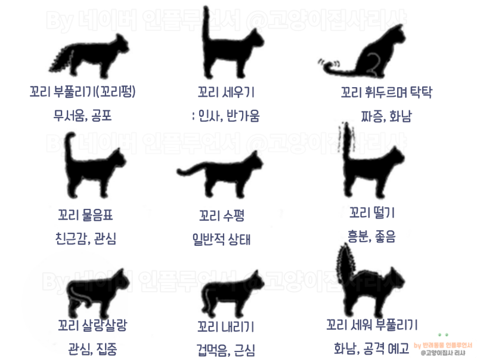

집사의 정석
집사의 정석
 지식정보사이트,
비마이캣
지식정보사이트,
비마이캣

고양이 지식IN/알쓸신잡
고양이 꼬리, 기분을 나타낸다고?
처음 고양이를 반려하다 보면 고양이가 기분이 좋은지 나쁜지 알기 힘들다. 고양이는 말을 하는 대신 소리, 눈빛, 손짓, 몸의 모양 등. 바디랭귀지를 통해 우리에게 말을 걸고 있다. 그 중에서도 고양이 꼬리! 고양이 꼬리를 관찰하며 기분을 알아보자.
고양이 꼬리, 기분을 나타내는 바디랭귀지
1. 높게 쳐든 꼬리
고양이가 돌아다니면서 위로 꼬리를 위로 쳐들고 있다면. 자신감과 만족감으로 가득 찬 상태이다. 위로 솟은 꼬리는 고양이가 행복한 상태이며. 사람들과 교감할 준비가 되었음을 보여준다. 끝 부분만 살짝 구부러진 경우는 더할 나위 없이 행복한 기분이다.
2. 물음표 모양으로 구부러진 꼬리
꼬리가 물음표 모양이라면. 고양이는 속으로 “시간 좀 있냐옹?”이라고 묻고 있는 것이다. 하던 일을 멈추고 고양이와 놀기 위해서 시간을 내자. 이 모양은 고양이가 놀고 싶고, 집사와 신나는 시간을 보낼 준비가 끝났다는 의미이다.
3. 꼬리를 몸 속으로 숨겼다면
꼬리를 몸 속으로 쏙 숨기고 있다면 무엇인가 고양이를 긴장하게 한다는 의미이다. 고양이를 무섭게 하는 요인이 무엇인지 파악하고 제거하는 것이 좋다.
4. 꼬리를 최대한 크게
꼬리가 평소와 다르게 요상한 모양으로 부풀어 있다면. 고양이가 매우 불안하고 겁먹은 상태임을 의미한다. 고양이는 위험을 느낄 때 자신의 몸을 최대한 크게 만들어 싸울 준비를 하기 때문이다. 이러한 꼬리 모양도 몸을 크게 만들기 위한 것이다.
5. 빠르게 휙휙 움직이는 꼬리
앞뒤로 꼬리를 빠르게 움직인다는 것은. 두려움이나 공격성을 의미한다. 잘 때 건들면 눈은 감은채로 꼬리를 움직여. 바닥을 콩콩 찍는 경우도 마찬가지다. 고양이는 “귀찮으니까 저리가!”라고 경고를 보내고 있는 것이다.
6. 천천히 살랑살랑 움직이는 꼬리
꼬리가 움직인다고 해서 모두 안 좋은 의미는 아니다. 고양이는 특정 물체에 집중(관심)할 때 양옆으로 꼬리를 살랑살랑 움직이곤 한다. 좋아하는 장난감을 놀 때, 음식을 먹을 때 이런 움직임을 보인다.